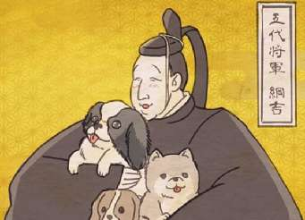

Борис Акунин
Мой календарь
Если у вас есть своя собака - сегодня порадуйте ее чем-нибудь. Если нету - просто погладьте чужую.
19 февраля 1709 года у собак японской империи случилось печальное событие. Умер правитель страны Цунаёси, вошедший в историю под именем Собачьего Сёгуна.
Сёгун очень любил собак - намного больше, чем людей (в общем, можно понять; госпожа де Севинье, которую мы недавно вспоминали, объяснила почему). Подданным островной страны при этом монархе жилось так себе, зато песикам - просто великолепно.
Высочайший «Указ о сочувствии к живым существам» строго-настрого запрещал обижать братьев наших меньших. Тот, кто ударил собачку, мог поплатиться за это жизнью.
В столице Эдо были устроены «гостиницы» для бездомных собак. Там содержали 50 тысяч ушастых, хвостатых, четырехлапых, досыта кормя их рисом и рыбой.
Всё это ужасно раздражало население, жившее впроголодь. Люди, в отличие от собак, завистливы. И как только собачий покровитель умер, сразу же началось тотальное избиение ни в чем не повинных псов. 19 февраля - черный день собачьего календаря.
Побудьте сегодня сёгуном Цунаёси. Чешите и угощайте собак, играйте с ними, ни за что не ругайте.